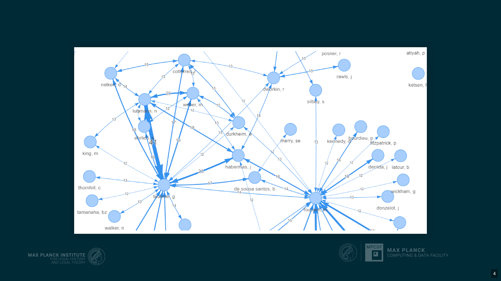

10 Extracting Citation Data from Law and Humanities Scholarship Using LLMs and a Specialized Gold Standard Dataset
Overview
This chapter details an innovative approach to extracting citation data from law and humanities scholarship, a domain historically underserved by conventional bibliometric databases. The research team has developed a specialised methodology to overcome the challenges posed by complex, often multilingual, footnotes and the poor coverage of non-STEM fields in existing data sources. At the core of this solution lies the strategic leverage of Large Language Models (LLMs) and Vision Language Models (VLMs), underpinned by a meticulously crafted, TEI XML-encoded gold standard dataset.
The project directly addresses critical limitations inherent in current bibliometric tools, such as Web of Science, Scopus, and OpenAlex. These platforms frequently lack comprehensive coverage for pre-digital, non-English, or non-“A-journal” content, whilst also imposing prohibitive costs and restrictive licences. Furthermore, the intricate nature of humanities footnotes, often laden with commentary and varied citation styles, renders traditional machine learning tools largely ineffective.
To ensure the reliability of LLM-extracted data, the team has established a robust testing and evaluation framework. This framework relies on a high-quality gold standard dataset, comprising over 1,000 footnotes from 20 open-access articles across multiple languages and historical periods, yielding more than 1,500 references. This dataset is encoded in TEI XML, a well-established standard in digital humanities, which facilitates detailed contextual markup beyond mere reference management.
A key technological contribution from the authors is “Llamore”, a lightweight Python package engineered for LLM-based reference extraction and performance evaluation. Llamore extracts citation data from raw text or PDFs, outputting TEI XML, and assesses extraction accuracy using the F1-score. It employs an unbalanced assignment problem solver to align extracted references with gold standard data, thereby maximising the total F1-score for robust evaluation.
Initial evaluations demonstrate Llamore’s efficacy. When tested against the PLOS 1000 biomedical dataset, Llamore (using Gemini 2.0 Flash) achieved an F1-score of 0.62, comparable to Grobid’s 0.61. Crucially, on the specialised footnoted humanities dataset, Llamore significantly outperformed Grobid, achieving an F1-score of 0.45 compared to Grobid’s 0.14. Whilst Grobid remains more resource-efficient for its trained literature, Llamore proves three times more effective for complex footnoted content. This research paves the way for generating comprehensive citation graphs, enabling deeper insights into intellectual history, influence reconstruction, and the reception of ideas within the humanities.
10.1 Citation Graphs in Intellectual History

Scholars primarily employ citation graphs to illuminate patterns and relationships within knowledge production, particularly in the realm of intellectual history. These analytical tools prove invaluable for reconstructing influences and meticulously measuring the reception of published ideas. Consequently, researchers can identify, for instance, the most-cited authors across specific timeframes. An illustrative example involves an analysis of the Journal of Law and Society, for which an interactive web application provides detailed insights.
10.2 Deficiencies in Existing Bibliometric Databases for SSH

A significant challenge arises from the extremely poor coverage of historical Social Sciences and Humanities (SSH) within existing bibliometric data sources. The research team deems these databases, including prominent platforms such as Web of Science, Scopus, and OpenAlex, fundamentally unusable for the specific domain under investigation, primarily owing to their pervasive lack of relevant data.
10.3 Limitations of Commercial and Open Bibliometric Databases

Beyond the general inadequacy, specific limitations plague both commercial and open bibliometric databases. Web of Science and Scopus, for instance, impose exorbitant costs and operate under highly restrictive licences; consequently, the authors advocate for a decisive shift away from reliance on these proprietary systems. Whilst OpenAlex offers the significant advantage of open access, it nonetheless presents considerable shortcomings for Social Sciences and Humanities research. Specifically, it frequently lacks comprehensive coverage for numerous “A-journals,” provides insufficient data from the pre-digital era, and typically omits content published in languages other than English.
10.4 Challenges in Humanities Data Coverage and Footnote Complexity

The Zeitschrift für Rechtssoziologie, a German Journal for Law and Society established in 1980, exemplifies the pervasive issue of poor data coverage within the humanities. Its citation data, as observed in bibliometric databases, only demonstrates significant improvement after the year 2000, with minimal records available for the preceding decades. This deficiency stems from several factors. Primarily, the humanities attract less commercial interest compared to STEM, medicine, and economics, which typically dominate large bibliometric databases. Moreover, these databases prioritise the “impact factor” for scientific evaluation, a metric largely irrelevant to research in intellectual history.
Crucially, the literature of interest in humanities scholarship frequently features highly complex footnotes, colloquially termed “footnotes from hell.” These are not mere citations; they often incorporate extensive commentary and various “messy” elements, all embedded within a considerable amount of non-citation “noise,” making automated extraction profoundly challenging.
10.5 Limitations of Traditional Tools and Promise of LLMs
Creating training data presents a formidable challenge, necessitating a labour-intensive annotation process that demands substantial time investment. Furthermore, existing tools, particularly those reliant on traditional machine learning methods such as Conditional Random Forests, exhibit poor performance when confronted with complex footnotes. For instance, ExCite’s performance, as documented by Boulanger and Iurshina in 2022, reveals consistently low extraction and segmentation accuracies across various training datasets.
Nevertheless, Large Language Models (LLMs) offer a promising avenue for resolution. Early experiments conducted in 2022 with models like text-davinci-003 already demonstrated the significant power of LLMs in extracting references from highly unstructured textual data. Newer models promise even better results, whilst Vision Language Models (VLMs) extend this capability to direct PDF processing. The research team is currently exploring various methods to harness these advanced models effectively.
10.6 Ensuring Trustworthiness and Robust Evaluation

A fundamental concern centres on the trustworthiness of results generated by Large Language Models. Instances of LLMs fabricating non-existent citations, as exemplified by a lawyer’s disastrous use of ChatGPT in federal court, underscore this critical issue. Consequently, a guiding principle dictates against attempting to solve problems for which no validation data exists.
To address this, the authors necessitate a robust testing and evaluation solution. This solution comprises three essential components:
A high-quality Gold Standard dataset.
A flexible framework capable of adapting to the rapidly evolving technological landscape.
Solid testing and evaluation algorithms designed to produce comparable metrics.
10.7 TEI-Annotated Gold Standard Dataset Development

The research team has embarked upon compiling a comprehensive training dataset, specifically designed for dual utility as evaluation data, employing TEI XML encoding. This choice stems from TEI’s status as a well-established, meticulously specified, and comprehensive standard for text interchange within the humanities and digital editorics. Unlike more constrained bibliographical standards such as CSL or BibTeX, TEI encompasses a broader array of phenomena, extending beyond mere reference management to facilitate the encoding of contextual information, including citation intention. Furthermore, its adoption enables the integration of existing TEI XML corpora from various digital editorics projects, thereby supporting the testing of generalisation and robustness features.
Despite its advantages, the TEI standard presents certain challenges, both conceptual—concerning the distinction between pointers and references—and technical—regarding constrained elements versus elliptic material. The dataset development process involves several stages: initially, capturing PDF screenshots; subsequently, segmenting the reference string to isolate the citation from surrounding non-reference text within footnotes; and finally, parsing the content into a structured data format, utilising TEI elements such as biblStruct, analytic, monogr, author, title, imprint, date, biblScope, and biblRef. This dataset is currently under active development.
10.8 Dataset Strategy Evolution and Tooling Integration
The strategy for constructing this dataset has evolved significantly. Initially, the focus centred on compiling data directly relevant to the primary research question. More recently, however, the authors made a strategic decision to incorporate PDFs, thereby enabling the utilisation of Vision Language Model (VLM) mechanisms. The overarching aim now involves publishing the complete dataset, encompassing everything from the raw PDFs to the meticulously parsed references. To achieve this, the team is sourcing material from open-access journals. The current scope involves coding over 1,000 footnotes derived from 20 articles, spanning several languages and a broad historical timeframe, which are expected to yield more than 1,500 references. Notably, even multiple occurrences of the same work are encoded separately to capture their distinct contexts.
A significant benefit of adopting the TEI XML standard lies in the extensive tooling available for this interoperable format. Grobid, a widely recognised tool for reference and information extraction, notably employs TEI XML for its training and evaluation processes. This alignment facilitates direct performance comparisons with Grobid and enables the provision of new training data to the Grobid team, fostering collaborative advancement.
10.9 Introducing Llamore: A Reference Extraction and Evaluation Package
The research team has developed “Llamore”, an acronym for Large LANguage MOdels for Reference Extraction, as a dedicated Python package. This tool serves a dual purpose: it extracts citation data from either raw text or PDF documents, leveraging multimodal Large Language Models, and subsequently evaluates the performance of this extraction. Specifically, Llamore processes textual or PDF inputs to generate references in TEI XML format, whilst also accepting gold standard references to produce an F1-score as an evaluation metric. The design of Llamore prioritises two key objectives: it remains lightweight, comprising fewer than 2,000 lines of code, and ensures broad compatibility with both open and closed Large Language Models.
10.10 Llamore Implementation and Workflow
Llamore is readily available on Pypi, enabling straightforward installation via pip. The extraction workflow commences with defining an extractor, which is contingent upon the specific Large Language Model selected. For instance, the OpenAI extractor offers broad compatibility, as many open model serving frameworks, including Olama and VLLM, provide OpenAI-compatible APIs. Subsequently, users supply either a PDF or raw text as input to this extractor, which then yields the extracted references. These references can then be exported conveniently to an XML file. For evaluation purposes, users import the dedicated F1 class and provide both the gold standard references and the extracted references to compute the macro average of performance metrics.
10.11 Llamore’s Evaluation Methodology: F1-Score and Reference Alignment
Llamore employs the F1-score as its primary evaluation metric, a well-established standard for comparing structured data. This score represents the harmonic mean of Precision and Recall, where Precision is calculated as the ratio of matches to predicted elements, and Recall as the ratio of matches to gold elements. An F1-score of 1 signifies perfect extraction, whilst a score of 0 indicates no matches whatsoever. For instance, an extracted reference might align perfectly with a gold reference on fields such as analytic_title, monographic_title, surname, and publication_date, yet exhibit a mismatch in the forename due to a minor discrepancy like an extraneous dot in the gold standard.
A more complex challenge arises in aligning multiple extracted references with their corresponding gold references. Llamore addresses this as an unbalanced assignment problem. The system computes F1-scores for every possible combination of extracted and gold references, subsequently constructing a matrix from these scores. It then leverages SciPy’s solver to maximise the total F1-score whilst ensuring a unique assignment between the extracted and gold references. Following this alignment, the individual F1-scores are macro-averaged to provide an overall performance metric.
10.12 Performance Evaluation of Llamore
Performance evaluations of Llamore reveal distinct capabilities across different datasets. When tested against the PLOS 1000 dataset, comprising 1,000 PDFs from the biomedical field, Llamore (utilising Gemini 2.0 Flash) achieved an exact match F1-score of 0.62, closely aligning with Grobid’s score of 0.61. This indicates comparable performance on literature for which Grobid was specifically trained. However, it is crucial to note that Grobid maintains a significant advantage in resource efficiency, requiring orders of magnitude less computational power than Gemini.
Conversely, on the custom humanities dataset, which features complex footnoted literature, Llamore demonstrated a marked superiority. Grobid struggled considerably, yielding an F1-score of merely 0.14, whilst Llamore (Gemini 2.0 Flash) achieved a substantially higher score of 0.45. This represents approximately a threefold improvement in performance for the challenging domain of footnoted humanities scholarship.
10.13 Conclusion and Takeaways
Grobid remains the preferred choice for literature upon which it has been specifically trained, primarily owing to its significantly faster processing speed and reduced resource intensity. Conversely, Llamore, when paired with Gemini, demonstrates approximately three times better performance for the challenging domain of footnoted literature. This performance specifically pertains to pure reference extraction, excluding contextual or cross-referencing information.
A critical aspect of utilising open-source databases, such as OpenAlex, involves the burden of quality assurance falling directly upon the user. The authors advise a cautious approach towards both OpenAlex and commercial databases like Web of Science and Scopus, as their quality assurance priorities may not align with specific research questions. Large Language Models, whilst powerful, can produce false positives by inventing citations, thus necessitating the attainment of reliable results before any large-scale application. The ultimate ambition extends beyond mere reference string extraction to obtaining reliable results for nuanced contextual information, such as whether a citation is approving or not.
Analysis reveals that Grobid’s poor performance on humanities data stems from its training data being out of distribution for this domain. Large Language Models, however, exhibit their own distinct failure modes. These include difficulty discerning ambiguous elements, such as whether a number represents a volume or a page, and being misled by capitalisation. They frequently misidentify personal names appearing within titles as authors and struggle with specialised terminology like Idem, Derselbe, passim, ibid, or n.d.. Furthermore, canonical citations found in fields such as Bible studies, Roman law, and classical literature, along with ellipses, abbreviations, and cross-references, present considerable challenges.
The requisite F1-score for a gold standard dataset is contingent upon the analytical ambition; a lower score might suffice for identifying broad tendencies, whilst high accuracy demands a much higher score. For less precise needs, such as fuzzy searching in bibliographical databases using only a title and author, an exact match may not be essential. Nevertheless, the current stage of research prioritises achieving highly reliable results to facilitate the extraction of richer contextual information. A human-in-the-loop approach has been considered for the dataset establishment workflow, where Llamore could pre-annotate data for subsequent human correction. However, intermediate stages, such as merely marking the referring string without full parsing, still necessitate substantial manual effort.